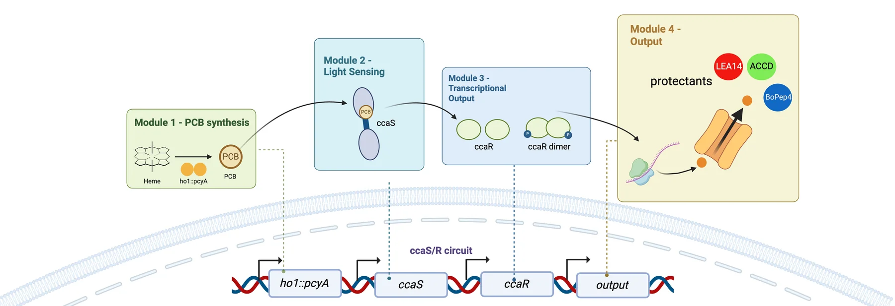
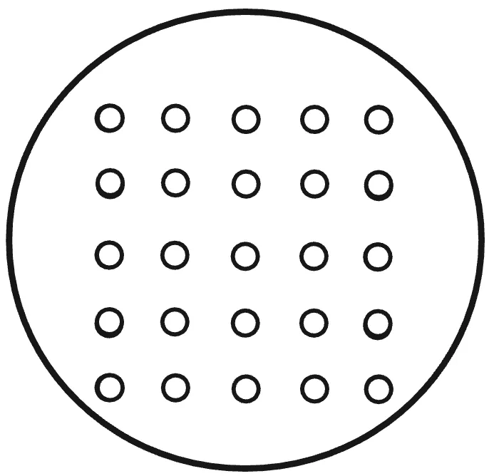
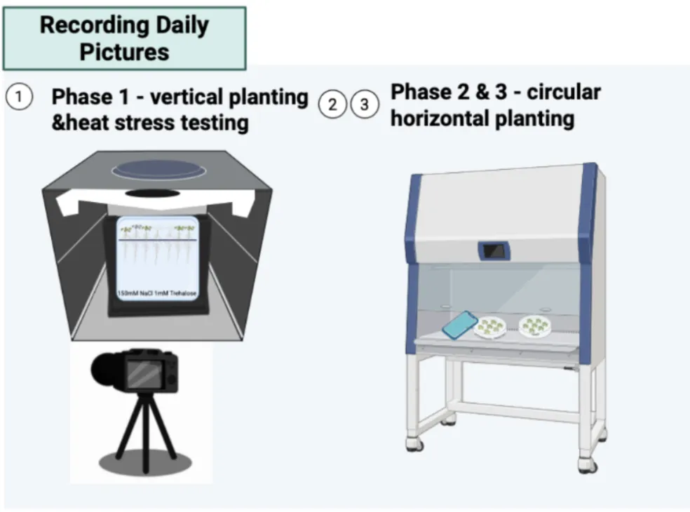
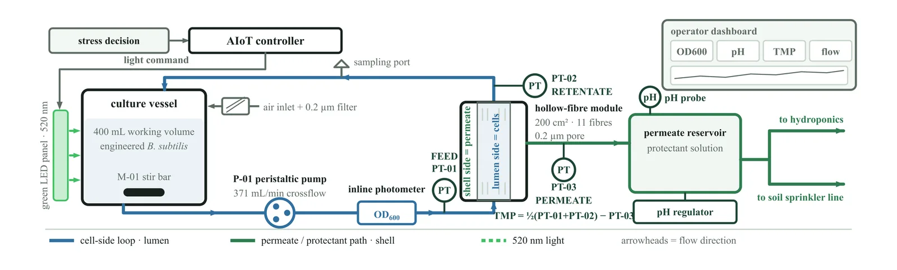
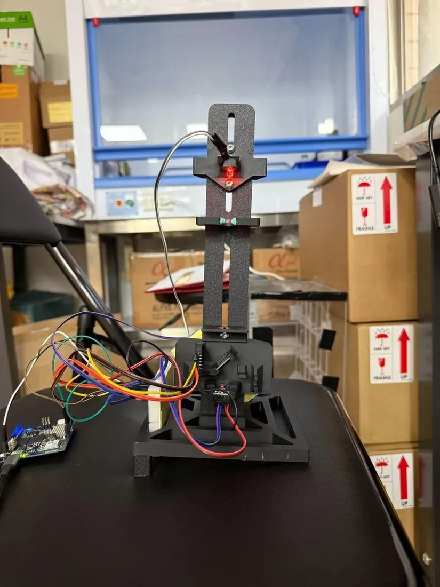
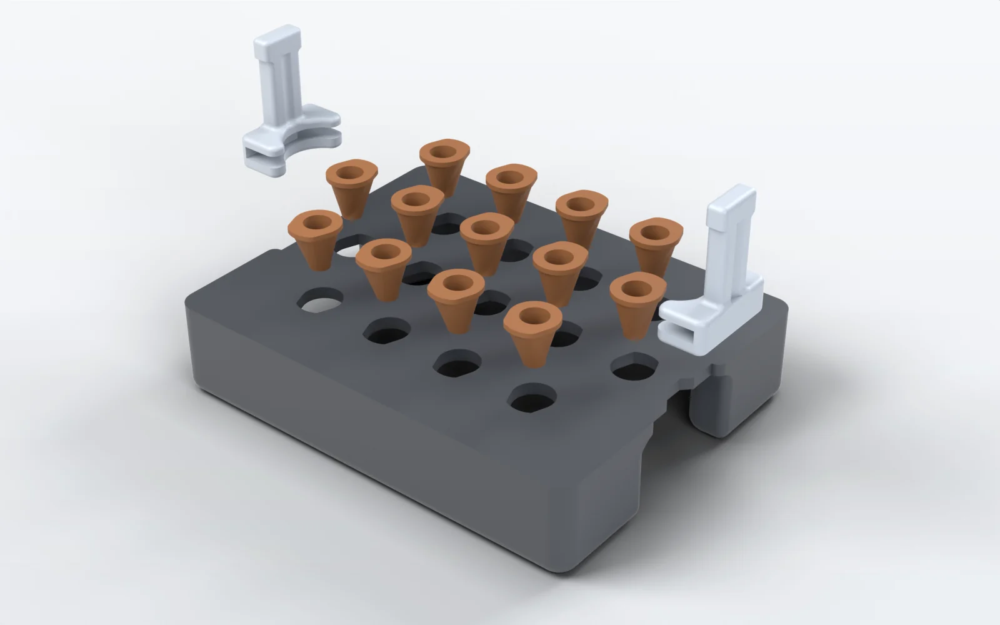
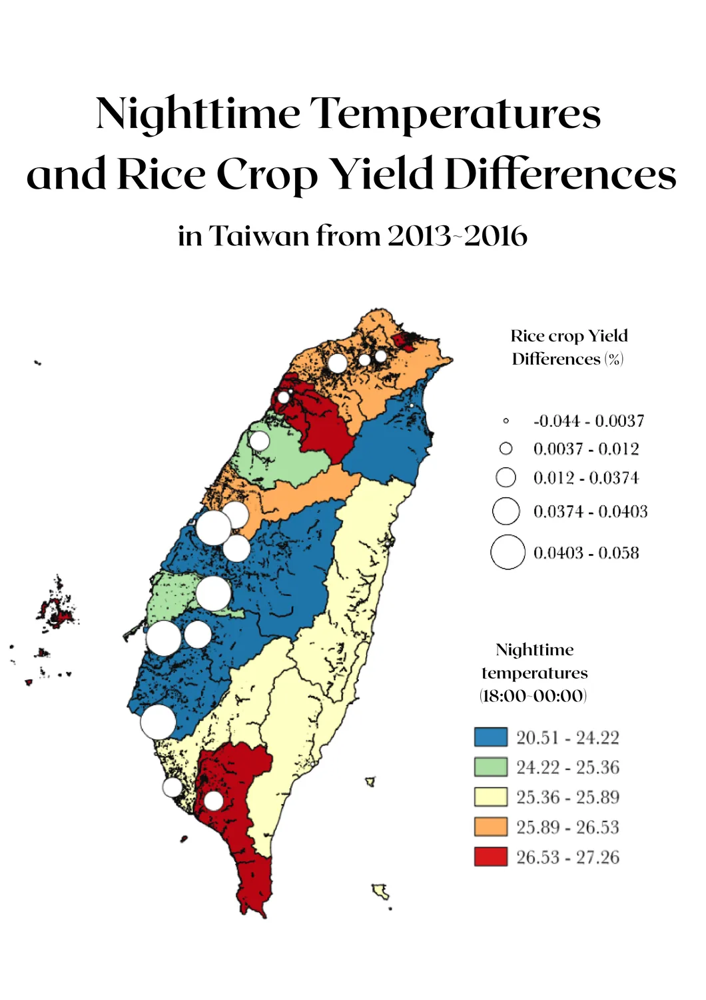
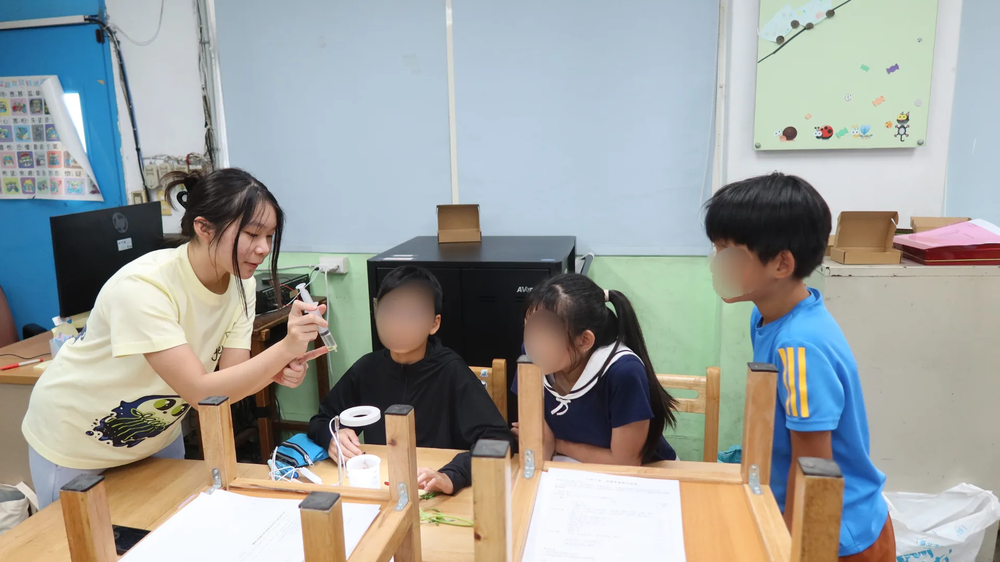

What we hand over
ReLEAF was designed not only as a working system, but also as something future teams can build from. We organized our main contributions into resources that can be reused, adapted, and improved, with downloadable files and clear notes on what has been validated so far.
Parts
ReLEAF was designed as a modular genetic system, allowing individual components to be modified or replaced without rebuilding the entire construct. The system is organized into five functional modules: four make up the green-light-responsive circuit, while the fifth drives constitutive expression of the plant-protective cargo and was used to generate the experimental results shown on this wiki.
Altogether we registered 31 parts on the iGEM Registry this year, from the coding sequences for the three protectants up to the two Level 2 devices that carry the whole light-controlled system, and they are assembled from eleven further entries deposited by earlier teams and by the SubtiToolKit.

1. PCB production endogenous heme into the chromophore the photoreceptor needs
Supplies phycocyanobilin, the chromophore CcaS-m3 needs to sense light, by converting endogenous heme inside the cell. The promoter PtagC and a ribosome binding site control transcription and translation, followed by the ho1–pcyA fusion CDS, which encodes heme oxygenase 1 fused to phycocyanobilin:ferredoxin oxidoreductase. The terminator L3S2P21 closes the module.
2. Light sensing the green-light photoreceptor, and the RBS chosen for B. subtilis
Carries the engineered green-light photoreceptor that detects external light. The constitutive promoters PlepA and PliaG give baseline transcription, and RBS0, a strong ribosome binding site optimized for B. subtilis, initiates translation. At its center is the ccaS-m3 CDS: once loaded with the PCB module 1 supplies, CcaS-m3 detects green light and autophosphorylates, relaying the signal downstream.
3. Transduction the response regulator that takes the phosphoryl group
Passes the signal from the sensor to the expression system downstream. The constitutive promoter Pveg holds expression steady and initiates translation of the ccaR CDS, which receives a phosphoryl group from the activated CcaS photoreceptor and then activates transcription.
4. Green-light responsive expression the protectant cassette, and the blocking device that keeps it quiet during cloning
The output: it turns the green-light signal into expression and secretion of the protectants. It is controlled by the synthetic light-responsive promoter PcpcG2-veg with EEBD-RBS0, a composite ribosome binding site carrying an Escherichia coli expression blocking device, a B0015 terminator flanked by recombination sites, which suppresses toxic protein production during the intermediate cloning steps.
Several coding sequences were evaluated in this position, among them Csn-AcdS-Histag and SamyQ-AcdS-Histag v2t1, which fuse ACC deaminase to a secretion signal peptide and a C-terminal 6×His tag. Six entries in the collection, the SamyQ fusions among them, are marked on Parts as designed: a sequence exists, and no bench step after that is recorded.
5. Expression the constitutive cassette behind every bench result
The largest module, fourteen entries, holds all three protectant cargoes behind a constitutive promoter with the shuttle vector that carried them into B. subtilis. A light-gated cassette cannot be tested until the cargo itself expresses and secretes, so this series was built first and every protein, plant and reactor result came out of it. For a future team it is the honest entry point: build the expression module, confirm the cargo, then put the light circuit in front of it.
All thirty-one entries, each linking to its Registry page, are on Parts; which modules assembled and what the sequencing said are on Engineering.
Plant protocol
A standardized workflow for evaluating plant responses under controlled growth and stress conditions, so a protectant result can be attributed to the protectant.
The protocol fixes temperature, photoperiod, nutrients, growth medium, plant age and hydroponic conditions on Arabidopsis thaliana, and adds controlled stress procedures for salinity, long-term heat and short-term heat shock. Each experiment records stress intensity, duration, plant age and treatment conditions, so it can be run again. The readouts are fixed too: root length, fresh weight, chlorophyll, MDA, anthocyanin, total protein and relative gene expression, with root length traced by hand in ImageJ from the baseline drawn on the plate. Leaf area stays qualitative, because leaves overlap and obstruct the measurement.
It carried eleven agar and two soil sets under salinity, and three agar and two soil sets under five days of 37 °C heat, across trehalose, the CH Bio peptide, ACC deaminase, LEA14 and BoPEP4. The fifteen-page PDF is at the foot of this page.
| What is fixed | Value |
|---|---|
| Plant material | Arabidopsis thaliana Columbia (Col-0 accession) |
| Medium | Half-strength Murashige and Skoog medium, 1% sucrose, pH 5.7 to 5.8 |
| Plate format | Circular horizontal plates, 30 mL agar; vertical plates, 50 mL agar |
| Vernalization | 4 days in darkness at 4 °C |
| Germination | 4 days in the growth chamber under standardized growth conditions |
| Seedling selection | Seedlings of similar developmental stage and root length |
| Root reference line | Horizontal line approximately 3 cm from the top of the square plate |
| Plate angle | Vertical with a slight backward tilt around 15° |
| Observation window | Approximately 10 days, photographed daily |
The steps
1. Prepare ½ MS growth medium for 1 L of agar solution
| Component | Amount |
|---|---|
| ½ MS medium powder | 2.3 g |
| MES buffer | 0.5 g |
| Sucrose | 10 g |
| Agar | 10 g |
| Distilled water | To 1 L |
- Mix components thoroughly using a hot plate to stir.
- Adjust to pH 5.7 to 5.8 using 0.1 M KOH if necessary.
- Autoclave for 20 minutes at 127 °C.
- Pour 30 mL of agar for circular horizontal plates and 50 mL for vertical plates.
2. Prepare Arabidopsis vertical and circular horizontal plates
For vertical plates
- Use the seed template (3 cm, 5 cm, 4 cm) to plant 18 seeds on each agar plate in two rows, nine seeds on each row.
- Use breathable tape to seal each of the agar plates.
- Label the vernalization date.
- Wrap the agar plates with aluminum foil.
- Vernalize seeds at 4 °C in darkness for 4 days.
- Incubate in the growth chamber for 4 days germination under standardized growth conditions.
- Select seedlings with similar growth and root length.
- Draw a horizontal reference line approximately 3 cm from the top of the square plate.
- Transfer seedlings based on the template so the root starting points align with the line, which allows subsequent root growth to be measured consistently.
- Grow plates vertically with a slight backward tilt around 15°.
For circular horizontal plates
- Use the circular horizontal plate seed template to plant seeds on each agar plate; the number of seeds varies with the trial settings.
- Seal, label, wrap in foil, vernalize at 4 °C in darkness for 4 days, then germinate in the growth chamber for 4 days.

3. Apply the protectant a delivery method per protectant, and the salinity plates behind it
1. Trehalose. Application: mix with the agar before it solidifies.
For 600 ml of agar, twelve plates: control and 150 and 250 mM NaCl, each at 0, 1, 5 and 10 mM trehalose.
| ½ MS medium powder (w/o sucrose) | 1.38 g |
| MES buffer | 0.3 g |
| Distilled water | 600 ml |
| Sucrose (1%) | 6 g |
| Agar powder (1%) | 6 g |
- Stir on a hot plate until no sediment is left, then check that the pH is 5.7 to 5.8, raising it with 0.1 M KOH if it is low.
- Split into three flasks of 200 ml labelled [0 mM], [150 mM] and [250 mM]; add 2.192 g of NaCl to the 150 mM flask and 3.652 g to the 250 mM flask.
- Split again into twelve flasks of 50 ml, one per trehalose and NaCl combination, and label each clearly.
- Add trehalose: 0 µL for 0 mM, 500 µL for 1 mM, 2500 µL for 5 mM, 5000 µL for 10 mM.
- Cap the necks with foil and indicator tape, autoclave for 20 minutes at 127 °C, and wait for the pressure to reach 0 before retrieving the flasks.
- While autoclaving, label the dishes in the biosafety cabinet: date and an up arrow for photograph orientation on the top right, concentrations on the bottom lid.
- Pour about 50 ml into each square dish in the cabinet, half the flasks at a time, keeping the rest in a hot bath so they do not solidify. Wipe each flask dry and spray with 70% ethanol before it goes in.
- Let the dishes solidify at room temperature in the cabinet.
2. CH bio peptide. Application: top drench on the agar surface, with treatment timings.
After plants have grown on agar in the growth chamber for 4 days, dilute the NaCl solutions to 0, 75, 100 and 150 mM, and dilute the peptide 1:500 into a 15 ml tube: 9.98 ml of sterile ddH2O with 20 µl of peptide.
- Pre-treatment, one day before: apply 1 ml of diluted peptide onto the agar surface, making sure the solution has submerged the plants.
- Co-treatment, day 0: 1 ml of diluted peptide, then 1 ml of the group’s NaCl concentration. Every treatment group receives salinity stress on the same day.
- Post-treatment, one day after: 1 ml of diluted peptide onto the agar surface.
3. ACCD. Application: foliar spraying.
After 4 days of growth, purify the ACCD and perform buffer exchange or dialysis, then transfer the solution to a clean spray container.
- Spray the pre-treatment plate one day before: hold it vertically and spray from leaves to roots at about 15 cm, enough that every plant is wetted, then seal with breathable tape and return it to the chamber.
- Spray the co-treatment plate on day 0 the same way, then stand all four groups on a rack at a slight tilt in the incubator at 37 °C under white light for thermo priming, and observe for 5 days.
- Spray the post-treatment plate one day after, and return it to the incubator.
The 0 mM NaCl group receives the same volume of sterile water as the treated groups, so every plate meets the same amount of liquid. Volume applied: 1.67 ml per plate, as three sprays over a 78.5 cm² plate.
LEA14 and BoPEP4. Application: purified protein or peptide solution.
Apply externally rather than introducing engineered bacteria into the plant experiment: prepare in a low-salt, plant-compatible buffer, apply the same volume to every treatment group, and give the control groups buffer alone. Use the same foliar spray framework as ACCD unless another delivery method is shown to work better.
4. Treatment timing pre, co and post, the comparison the protocol is built around
The same protocol investigates when a protectant should be released: pretreatment applies it one day before the NaCl stress, cotreatment at the same time, post-treatment one day after. This structure was used in the later protectant experiments to compare timing-dependent rescue. For a simple first comparison, use cotreatment for all three protectants.
5. Monitor plant response what to photograph, what to record, and the endpoint measurements
Observe for about 10 days, photographing daily with the same black background, lighting, plate orientation and camera distance.

Daily: root growth, leaf area or plant size, visible phenotype, survival. At the end: fresh weight, chlorophyll content, final root length. For protectant groups: MDA, total protein, enzymatic activity.
Experimental logic. Salt only measures the effect of salinity stress. Protectant only measures whether the protectant itself affects growth. Salt plus protectant measures whether it rescues. Pre against co against post measures when delivery is most effective.
ACC deaminase activity assay
A microscale DNPH assay for ACC deaminase activity, scaled down twentyfold onto a 96-well plate, with the calculations that turn an absorbance into an amount of product.
Whether a secreted enzyme works is a different question from how much of it there is, and a protein gel answers only the second. ACC deaminase cleaves ACC into α-ketobutyrate and ammonia, so either product can stand in for activity. The Berthelot assay reads the ammonium; the 2,4-dinitrophenylhydrazine (DNPH) assay reads the α-ketobutyrate directly. The published comparison favours DNPH on three counts: the ACC substrate does not interfere, the background in complex culture media is substantially lower, and it is reported as nineteen times more sensitive [8]. At that sensitivity initial velocities become readable, and with them Km and kcat.
What we changed. We scaled the conventional Penrose and Glick procedure down twentyfold, holding the original reaction proportions, so that it runs on a 96-well microplate instead of in tubes. The reaction is 110 µL – 100 µL of filtered culture supernatant, 5 µL of 20× reaction buffer and 5 µL of 1 M ACC – and each timepoint draws a 10 µL aliquot, quenched, cleared, derivatised with DNPH in 2 N HCl and developed with NaOH before reading at 540 nm. What once cost a tube per reading now fits on one plate, which is what makes a time course or a panel of strains practical.
What we used it for. Three things: ACC deaminase activity measured as α-ketobutyrate production; the effect of supplementing the reaction buffer with pyridoxal 5’-phosphate, the enzyme’s cofactor; and whether the recombinant ACCD that engineered B. subtilis secretes is still functional once it is outside the cell. Alongside the procedure we established a standard curve against sodium 2-oxobutyrate and the arithmetic behind it: net absorbance against a sample blank, interpolation on that curve, and conversion into total product over the reaction volume.
How others can reuse it. The sheet stands on its own – six reagents with their preparation and storage, five reaction steps, and three calculation steps with their equations – so a team measuring ACC deaminase in a culture supernatant, in another chassis or behind another promoter, can run it without rederiving the arithmetic. What we are handing over is the procedure; the numbers behind it are still thin.
Resources. The protocol sheet is in Resources below, and in context on Experiments. The readings it produced are on Math Model, and the reactor permeate assays on Measurement.
Hardware
Four devices, each built because the equivalent was unavailable, unaffordable or undocumented.
Each hardware element includes dimensions, a materials list, and the files needed to reproduce the design. For the bioreactor, both photometers, and the light plate, we also provide step-by-step assembly guides. The reactor user manual and printable files are collected in the Resources section below.
Perfusion bioreactor
Batch systems change throughout a run, so cell density and product concentration move together with no way to set one without moving the other. Researching bioreactors elsewhere, we never found a group using a hollow-fiber membrane to separate bacteria from a produced protein, so we built a continuous system that keeps the cells in the lumen and lets secreted protectant pass into the permeate. That search showed us a broader problem: a system that harvests a secreted product is only reproducible if the hydraulic conditions it runs at are characterized and reported.

- What it standardizes. Cell retention and product separation; the flow operating point written down instead of left implicit, 94 mL/min on the culture loop with the reservoir stirred at 200 rpm and the module’s own pressure drop checked against theory at 263 mL/min; the shear the cells meet; the permeate and sampling points.
- Why it matters. Where most write-ups say only “continuous culture”, a characterized operating point means a result can be attributed to the biology and not to an undocumented vessel.
- Cost. NT$16,450 in parts, or NT$30,450 with the reference spectrophotometer the cost sheet carries beside them.
- Where the detail is. The ten specifications and the materials list on Hardware: Bioreactor, the hydraulic fit and the shear calculation on Biomanufacturing, the six runs on Digital Twin.
- What to build it from. A ten-page assembly guide that starts at the safety rules and the parts checklist and ends at the leak test, a sixteen-page user manual for running and cleaning it, and a product brochure for the BR-01 as it would be offered to a farm.
The membrane is also the containment barrier between the engineered cells and the plants outside, specified for reuse as an mPES hollow-fiber module rated at 0.2 µm, run in crossflow with the cells on the lumen side. Fouling has one trend behind it: across 42 h on 14 to 16 October the pressure the module needed beyond clean water at the same flow rose from 2.0 to 3.8 kPa, nothing had to be cleaned, and no replacement interval follows from a single run.
In-line optical density photometer
OD600 is conventionally read by pulling a grab sample into a benchtop spectrophotometer: manual, low-frequency, contamination-prone, and an interruption of the run it is meant to describe. Ours reads inside the loop instead. A 600 nm source, a paralleling lens, a 90:10 beam splitter feeding a reference channel, two GY-302 lux sensors on one I²C bus and a 2 mm flow cuvette; it runs with no computer attached and reports OD600 from the sample-to-reference ratio about every ten minutes. Five build cycles took it from a bench light path to the instrument that ran for 400 hours, and a slimmer second design followed in October. The parts come to about US$360, against roughly US$15,000 for the benchtop instrument it stands in for.
- What it standardizes. Measurement in-line with no sample removed; a 16-reading burst with the first two discarded, then median and MAD; outliers rejected beyond median ± 3·MAD, with the rejection rate shown in red above 50%; two acceptance gates added in October, one flagging readings whose two estimates differ by more than 0.03 OD and one holding back a jump beyond 0.05 OD until three readings agree; fixed optical geometry; logging every 10 minutes.
- Why it matters. Measuring in-line removes the handling step behind most of the variance in manual OD readings. Against a BioDrop the raw, uncorrected output agrees to a median of 3.8%, so the instrument can be rebuilt and used without fitting a calibration equation to a reference machine.
- What was validated. More than 400 h on B. subtilis 168 at 22 °C with no sample withdrawn, and two turbidity series: titanium dioxide in August, where each instrument tracks the mass added at R² above 0.999, and silica on 10 October, where the two regress against each other at a slope of 1.001 with a constant offset of about 0.12 OD.
- What to build it from. A twelve-page assembly guide for the Pro and a thirteen-page one for the Slim, each with its own parts list, wiring and first reading.

The cost‑down build
Three parts carry most of the price: the beam splitter, the paralleling lens and the flow cuvette come to US$275 of the US$360.60. The cuvette is what makes the reading in‑line, so it stays. The other two are replaced by two plastic optical fibers fed from one illuminator, split 1:1 between the sample and the reference channel rather than the Pro’s 9:1. That single substitution takes more than US$130 off the parts and more than two‑thirds off the volume, and leaves fewer components to drift out of alignment.
It costs something in sensitivity. On the silica series of 10 October the Slim was the more linear of the two instruments, R² = 0.992 against the Pro’s 0.974, but it reads about a fifth of the Pro’s scale, because its light source sits closer to the cuvette and the sensor receptor. The wider working range that implies has not been tested. Build the Pro to read OD600 nearly 1:1 with a benchtop instrument; build the Slim where cost, size and maintenance matter more than matching a reference machine. Its own thirteen‑page assembly guide is in Resources, and the comparison in full is on Hardware: Photometer.
Light plate apparatus

The light dose a culture receives depends on LED output, distance, vessel geometry and crosstalk between neighbouring wells, and existing light plate hardware was costly enough to be a barrier. Ours is a four-by-six holder of twenty-four cultures, lit at about 535 nm or about 670 nm, with an Arduino driving three MOSFET channels by PWM. Forty LEDs were measured one at a time and matched in fours, which brought each group within 0.4 to 1.8% of itself, from spreads of 26% in green and 22% in red before sorting.
Matching alone did not do the job we expected. Even after sorting, the groups sat too close together to form three separate intensity tiers, so the tiers are set by the PWM duty cycle and the matching serves to make the four cultures in a group comparable to each other. The finding worth passing on is the division of labour: sort the LEDs for replicate consistency, set the dose in firmware. A ten-page assembly guide builds the array from the printed parts and the matched LEDs up, and the per-LED measurements are published with it on Hardware: LPA.
Laboratory hydroponics platform

Small differences in spacing, nutrient exposure, root position or container geometry introduce variation on their own. Visiting a laboratory at National Taiwan University, we saw older hydroponic setups stored away and no longer in use: a system that exists is not necessarily one another lab can rebuild. The first prototype was a plate held at a set height and corrected by hand; the second floated on corner poles carrying trim washers; the third is the one we publish, with a smaller footprint, clip-in handles and no ballast. Sixteen printed pieces hold thirteen Arabidopsis seedlings at one depth, in rows of four, five and four on a 21.59 mm pitch, and it assembles without adhesives or fasteners. Sealed air of 42.27 cm³ across its two pontoons puts the drawn freeboard at 9.2 mm, and every 3.5 g added sinks it about a millimetre.
The salinity runs on Plants were grown on this plate inside a black light-blocking box of 14.7 by 11.5 by 6.2 cm. The geometry, the parts table and the print settings are on Hardware: Hydroponics, and the four meshes are below. This is the one device we wrote no assembly guide for, because it needs none: the parts clip together without adhesives or fasteners.
Software
A digital twin for real-time reactor monitoring, written to run where nobody can stand over it.
The reactor is meant to stand near farmland, where nobody can constantly sample the culture, so the software has to do what an operator at the bench would: watch conditions, judge whether sensor data can be trusted, predict how the culture will grow, and say when to make protectant. It holds what the field needs beside what the reactor can deliver. The reactor side supplies biomass, growth, pressure, flow, membrane state and sensor reliability; the regional side supplies crop-stress risk from the geospatial analysis below. Measured, operator-commanded, calculated and planned values are kept apart, so every number on screen has a clear source.
Six reactor runs are on record, from the first prototype in June to 41.8 continuous hours on 14 to 16 October. The strongest piece of the handover is a forecast we registered before that run: on 1 October we published a growth rate of 0.2986 h⁻¹, with a 90% interval of 0.2705 to 0.3300, fitted on light-plate data. The October run returned 0.286 ± 0.010 h⁻¹, inside the interval. A fault model trained on the first 120 h of the 434-hour run flagged the failing photometer 26.7 h early at a 6.1% false-alarm rate, and the short-horizon filter beats persistence by 41% at two hours. Both programs are released under the MIT licence. The source is in iGEM’s software repository, gitlab.igem.org/2026/software/gems-taiwan/digital-twin, with the running instrument under rig-app/ and the browser twin under next-twin/; the interface and the run records are on Digital Twin.
Geospatial analysis
A GIS workflow that shows where plant stress and crop production overlap, and a prompt that prepares the data for it.
Plant stress is not spread evenly, so each farming region carries its own combination of risk and ReLEAF is designed to answer local conditions. We compared climate variables with regional rice yield to see where heat and salinity overlap with important crop-producing regions, and built the fertilizer and agrochemical footprint the same way, aggregating 2,792,536 individual land parcels by township into 346 demand nodes.

Interpreting large environmental datasets is still difficult for a non-specialist, so we wrote a broad, reusable prompt: a structural guideline an LLM follows to turn raw data with inconsistent coordinates, software and formatting into GeoJSON, CSV or shapefiles QGIS can read. Its rules are what make it safe to hand on: use only the data provided, never geocode or invent a coordinate, ask when the reference system is unknown, flag empty, ambiguous or unusable values, show the calculation, and state the reference system in the output. The LLM does not do the analysis; it organizes the data the user already has. The prompt text, a beginner’s QGIS guide and the thirteen maps behind this analysis are on Geospatial Analysis, where the soil classification behind the ownership model is still a placeholder awaiting parcel-resolved survey data.
Education
Everything we taught, free to download and teach again.

For our team, education is not a one-time lesson taught in an hour or two. It is a journey students carry forward and apply to other parts of their lives. We taught 144 students across five schools, and everything we taught them is published for anyone to teach again.
What we created. Three lesson plans, three bilingual slide decks, a card game, two browser games and a plant stress simulator, covering plant stress, climate change, sustainability and synthetic biology through hands-on activities. The elementary lesson went through four trials on three dates before we published it; the junior high and high school lessons have each been taught once.
How others can reuse it. The materials work without our team in the room, so a teacher, a school club or a future iGEM team can pick them up as they are. They were shaped by post-activity surveys and bioethics debates, and those results are worth reading first: every question scored at least 80% for accuracy except DNA base pairing, which 30% of students answered correctly from a 0% baseline, and 75 of 99 elementary students named the card game as their favourite part. The junior high lesson plan is in Chinese only, while the three slide decks carry both languages.
Resources. The lesson plans, slide decks and card game are in Resources below. The surveys and debates that changed each lesson are on Education.
Agricultural waste as culture medium
Hay infusion, okara extract and sugarcane extract tested as culture media for B. subtilis, measured against LB.
In the laboratory B. subtilis is usually grown in chemical media such as LB [7], which works on a bench but is not something a farmer can easily obtain; without culture medium, producing protectant on a farm stops being feasible. Agricultural byproducts are already generated on site and may carry useful carbon and nitrogen. We tested three: hay, which provides carbohydrates and structural polysaccharides, okara, which is rich in protein [4], and sugarcane bagasse, whose cellulose and hemicellulose can serve as carbon sources after processing [3], along with mixtures of all three.

After 18 hours at 37 °C the 1:1:2 mixture gave the highest average OD600 at 0.720, followed by 1:2:1 at 0.708. LB reached 0.573 and hay alone 0.555, while okara alone was weakest at 0.333. Combining extracts appears to give a more balanced nutrient source than any single one.
Why it matters. At least 1,300 million tons of agricultural waste is produced every year. Handling it through landfill and incineration contributes about 3% of global greenhouse gas emissions and creates various toxic pollutants [5]; for hay in particular, humid weather in Taiwan damages its quality and encourages mold, wasting nearly 5,000 tonnes each season [6]. Repurposing these wastes turns a local byproduct into a resource, and supports SDG 12. Preparation still takes processing, so deployment would more realistically run through farmer cooperatives or agricultural research stations than through individual farmers, which lifts the technical burden off the farmer but adds transport, processing and distribution costs that future work should price.
Resources
All files used to reproduce, test, or extend our contributions are available below under the CC BY 4.0 license. Please provide appropriate attribution when reusing or adapting these materials.
Plant growth and testing
The standardized stress protocol this page describes, the five narrower assay sheets behind it, and the plant team’s own record.
Cloning
Ten sheets, each with the full procedure down to reagent volumes, cycling conditions and the control the readout is scored against.
Protein production
Extraction, purification, the two gels we read our protectant on, the His-tag ELISA behind the concentration figures and the microscale activity assay, with the wet lab’s month-by-month record.
Bioreactor
Build it from the safety rules and the parts checklist through to the leak test, then run and clean it from the manual.
Photometer
A guide for each of the two instruments, the silica calibration procedure, and the eight printed parts of the Pro. Bambu Lab X1 Carbon at 0.2 mm, 20% gyroid infill; PLA Matte for the body, TPU 95A for the cuvette slots.
Light plate
The build guide and six meshes in the instrument’s own coordinates, so they open assembled. The LED grid is 4 × 6 on an 18 mm pitch, with 24 bores at 17 mm.
Hydroponics plates
Four meshes in millimetres, Z up, in the assembly’s own coordinates. One of each part and thirteen seed holders; PLA, 15% gyroid infill in the pontoon sections, no supports, and they clip together without adhesives or fasteners.
Education materials
Everything we taught, free to reteach. The three slide decks carry Chinese and English on the slide.
References
- Caro-Astorga, J., Rogan, M., Malcı, K., Ming, H., Debenedictis, E., James, P., & Ellis, T. (2025). SubtiToolKit: a bioengineering kit for Bacillus subtilis and Gram-positive bacteria. Trends in Biotechnology, 43(6), 1446 to 1469. doi:10.1016/j.tibtech.2025.02.004
- Castillo-Hair, S. M., Baerman, E. A., Fujita, M., Igoshin, O. A., & Tabor, J. J. (2019). Optogenetic control of Bacillus subtilis gene expression. Nature Communications, 10, 3099. doi:10.1038/s41467-019-10906-6
- Alokika, Anu, Kumar, A., Kumar, V., & Singh, B. (2021). Cellulosic and hemicellulosic fractions of sugarcane bagasse: potential, challenges and future perspective. International Journal of Biological Macromolecules, 169, 564 to 582. doi:10.1016/j.ijbiomac.2020.12.175
- Genbrovit, I. P., Ningrum, A., & Manikharda (2026). Production of okara protein hydrolysate with bromelain-papain combination and characterization of physicochemical and functional properties. Journal of Food Science, 91(6), e71153. doi:10.1111/1750-3841.71153
- Lee, K.-T., Chen, W.-H., Sarles, P., Park, Y.-K., & Ok, Y. S. (2022). Recover energy and materials from agricultural waste via thermochemical conversion. One Earth, 5(11), 1200 to 1204. doi:10.1016/j.oneear.2022.10.010
- Lee, I. (2013, March 16). Research group discovers way to better utilize hay. Taipei Times. taipeitimes.com
- Wang, H., Guo, J., Chen, X., & He, H. (2023). The metabolomics changes in Luria-Bertani broth medium under different sterilization methods and their effects on Bacillus growth. Metabolites, 13(8), 958. doi:10.3390/metabo13080958
- Penrose, D. M., & Glick, B. R. (2003). Methods for isolating and characterizing ACC deaminase-containing plant growth-promoting rhizobacteria. Physiologia Plantarum, 118(1), 10 to 15. doi:10.1034/j.1399-3054.2003.00086.x